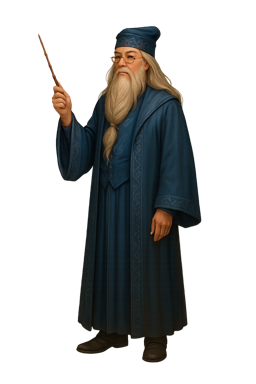

Albus Dumbledore
Back to Hogwarts “I am not proud, Harry. I was afraid. Afraid that I might make the same mistakes I made thirteen years ago, when Lord Voldemort rose to power and I discovered that it is my fate to try to stop him. I was afraid that if I told you everything that I knew, you would do as you did tonight, and seek out Voldemort, rather than waiting for me to tell you what to do. I was afraid that I would lose you, as I lost my closest friend. I cared about you too much. I cared more for your happiness than your knowing the truth, more for your peace of mind than my plan, more for your life than the lives that might be lost if the plan failed. In other words, I acted exactly as Voldemort expects we fools who love to act. I was trying to keep you from pain, Harry. I should have told you. I should have told you years ago.”
“Youth cannot know how age thinks and feels. But old men are guilty if they forget what it was to be young. And I seem to have forgotten lately.”
“The prophecy does not mean you have to do anything! But the prophecy caused Voldemort to mark you as his equal… in other words, you are free to choose your way, quite free. Voldemort continues to set store by the prophecy. He will continue to hunt you… which makes it certain, really, that —”
“In the end, it comes down to whether or not you are prepared to meet him as an equal. And so, Harry, the prophecy does not bind you. You do. You have a power Voldemort has never had. You are capable of love. He never was.”
Personality of Albus Dumbledore
Introduction
Albus Dumbledore is one of the most complex, wise, and enigmatic characters in the *Harry Potter* series. As the headmaster of Hogwarts School of Witchcraft and Wizardry, he serves as a mentor, protector, and guiding figure to Harry and many others. Dumbledore’s personality is a rich blend of compassion, intelligence, humility, humor, and hidden sorrow. While he is celebrated for his brilliance and power, he is also a man haunted by past mistakes and determined to atone for them.Over the course of the series, readers come to see the many layers of Dumbledore’s character. He is not simply the wise old wizard; he is a man of deep emotion, ethical struggle, and a strong belief in the power of love, choice, and redemption. His personality makes him both a great leader and a profoundly human figure.
Wisdom and Intelligence
Dumbledore is widely regarded as the most brilliant wizard of his time. His mastery of magic, from complex spells to alchemy, is legendary. He is a thinker, a strategist, and a scholar who has contributed greatly to magical knowledge. However, his wisdom extends beyond his magical skill. Dumbledore understands people — their hopes, fears, and motivations — and he uses this understanding to guide others toward good.He is a man who values the truth but recognizes that truth can be painful and dangerous. He believes that knowledge is important, but it must be handled with care. His decision to withhold certain truths from Harry reflects this belief, though it also reveals his tendency to shoulder burdens alone in the name of protection.
Dumbledore’s intelligence is balanced by humility. Despite his great knowledge, he does not consider himself infallible. He admits his mistakes openly, especially in later years, and teaches Harry that even the wisest can err.
Kindness and Compassion
At his core, Dumbledore is a deeply compassionate man. He consistently shows mercy to those who have gone astray, offering second chances to individuals such as Severus Snape, Rubeus Hagrid, and even Draco Malfoy. He believes in the potential for goodness in everyone, no matter their past.Dumbledore’s compassion is not limited to grand gestures. He takes care to make each student at Hogwarts feel valued and safe. He is gentle in his manner, speaking kindly even in tense situations, and his twinkle of humor often puts others at ease.
He also shows great care for magical creatures and those whom the wizarding world marginalizes. His inclusiveness is part of what makes Hogwarts a refuge for many.
Belief in Love and Choice
One of Dumbledore’s most defining traits is his belief in the power of love. He teaches Harry that love is the greatest form of magic, stronger even than the Dark Arts. This belief guides many of his actions, from his decision to protect Harry as a baby to his refusal to kill unnecessarily.Dumbledore also believes in the importance of choice. He reminds Harry and others that it is our choices, more than our abilities, that define who we are. Dumbledore understands that while prophecies and powers shape the world, it is individual decisions that determine outcomes. This faith in free will is central to his worldview.
His guidance helps Harry and others learn to make their own moral decisions rather than simply follow orders. In this way, Dumbledore is not just a protector but a teacher of moral responsibility.
Humility and Humor
Dumbledore is known for his humility, despite his status as the most powerful wizard of his age. He does not seek glory or praise. He often deflects attention with humor, lightening tense moments with his quirky remarks or fondness for sweets. His office is filled with odd and whimsical objects, reflecting his delight in small joys and his ability to find light even in dark times.This humor serves as a shield as well as a gift. It allows him to disarm hostility and to remind others not to take themselves too seriously. Yet behind the humor lies a man of great seriousness when it comes to matters of justice and kindness.
Strategic Mind and Leadership
Dumbledore is a master strategist. He understands how to inspire loyalty, how to read the political landscape, and how to plan for the long term. His leadership of the Order of the Phoenix shows his ability to coordinate resistance against Voldemort with great wisdom.He makes difficult decisions, often sacrificing his own happiness and peace for the sake of others. For example, he entrusts Snape with dangerous missions and puts faith in complicated plans that others might not fully understand.
Though he avoids direct confrontation with authority when possible, Dumbledore is unafraid to stand up to injustice. His decision to oppose Voldemort and the corrupt elements of the Ministry of Magic shows his moral courage.
Secrecy and Burden of Guilt
While Dumbledore is admired for his goodness, he is also a man of secrets. He often keeps his plans and knowledge to himself, partly to protect others but also because he struggles with guilt and regret. His past, including his relationship with Gellert Grindelwald and the tragedy involving his sister Ariana, haunts him deeply.Dumbledore’s secrecy sometimes creates distance between himself and others. Harry, for example, often feels frustrated by how much Dumbledore withholds. Yet Dumbledore’s intentions are usually rooted in a desire to spare others pain or danger.
He carries the weight of his past mistakes heavily, and this burden shapes many of his decisions. His humility comes in part from his awareness of how ambition and pride once led him astray.
Bravery and Sacrifice
Dumbledore’s bravery is quieter than that of a warrior, but no less powerful. He consistently puts himself at risk to protect others and to combat evil. He faces Voldemort directly when necessary and is willing to die for the greater good, as seen in his acceptance of his own death at Snape’s hand as part of their plan.His willingness to sacrifice himself, to suffer personal loss, and to endure misunderstanding or blame shows his deep commitment to the fight against darkness.
Complex Morality
Dumbledore’s morality is nuanced. He believes in the greater good but has learned, through bitter experience, the danger of valuing the goal over the means. His younger self was drawn to dangerous ideals, but the pain of that period taught him compassion and restraint.This complexity makes him cautious. He struggles with how much to guide, how much to reveal, and how to balance protection with empowerment. He is aware that even well-intentioned plans can cause harm, and this awareness informs his careful, sometimes secretive, actions.
Growth Over Time
Dumbledore’s personality changes over the course of his life. In his youth, he was brilliant but ambitious, eager to shape the world. The tragedy with Ariana and the fallout from his friendship with Grindelwald humbled him and deepened his empathy.As he grows older, he becomes a man dedicated to service rather than power. His focus shifts to nurturing others, protecting the vulnerable, and guiding the next generation to do what he himself once failed to do.
His growth is marked by greater self-awareness and a determination to act ethically, even when it brings him pain.
Conclusion
Albus Dumbledore’s personality is rich, layered, and deeply human. He is at once a symbol of wisdom and kindness and a reminder of the weight of past mistakes. His intelligence, compassion, sense of humor, and moral depth make him an extraordinary leader and teacher.Yet it is his flaws — his secrecy, his guilt, his struggle with the burden of power — that make him most real. Dumbledore teaches not only through his brilliance but through his humanity: that even the wisest can err, that redemption is possible, and that love remains the most powerful force of all.
His legacy endures as one of the most inspiring characters in literature, a man who used his gifts not for personal gain, but for the betterment of the world and the people he loved.
Back to Top